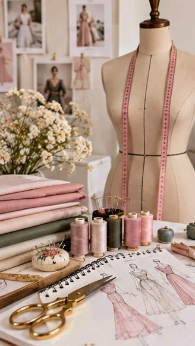
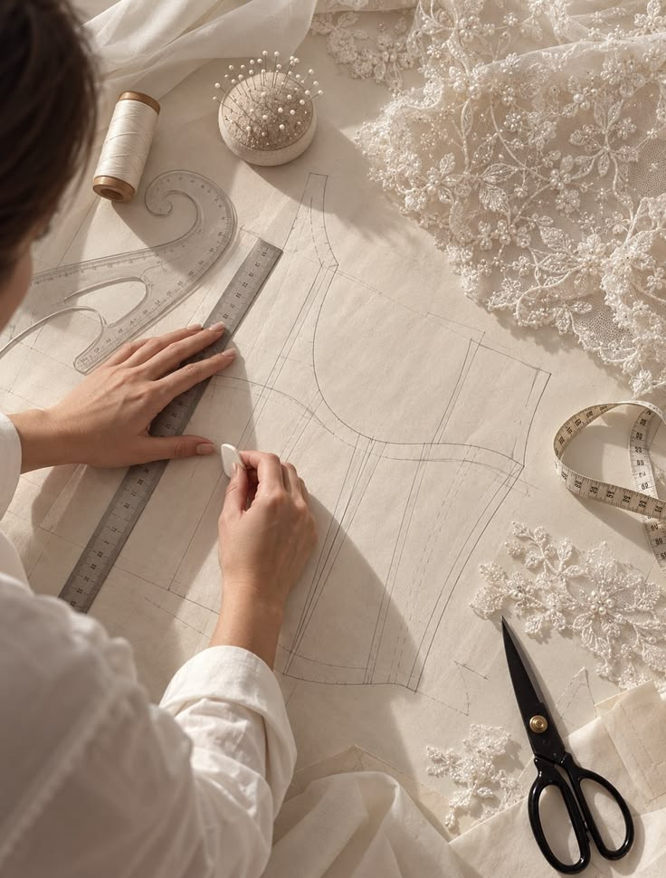
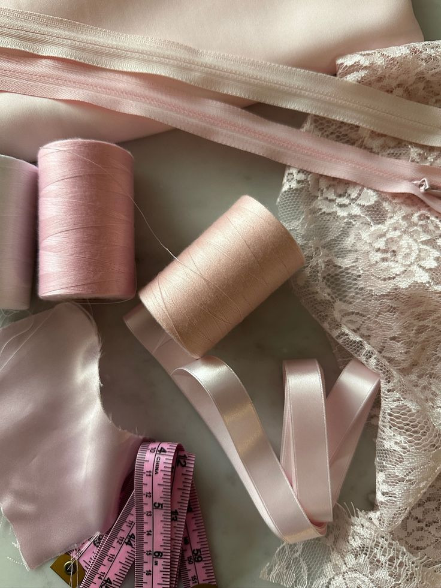
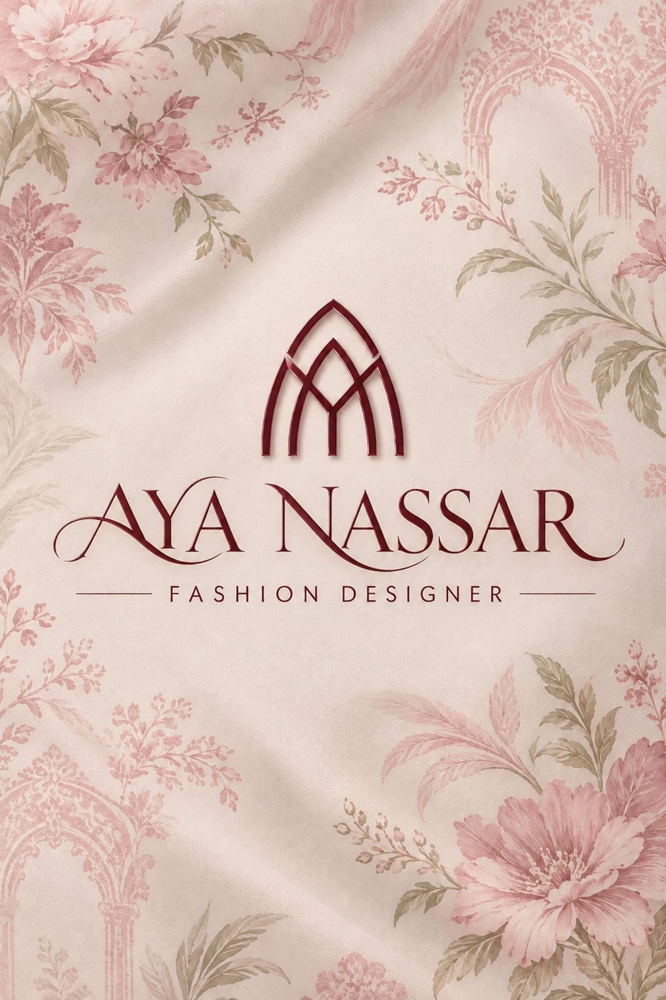
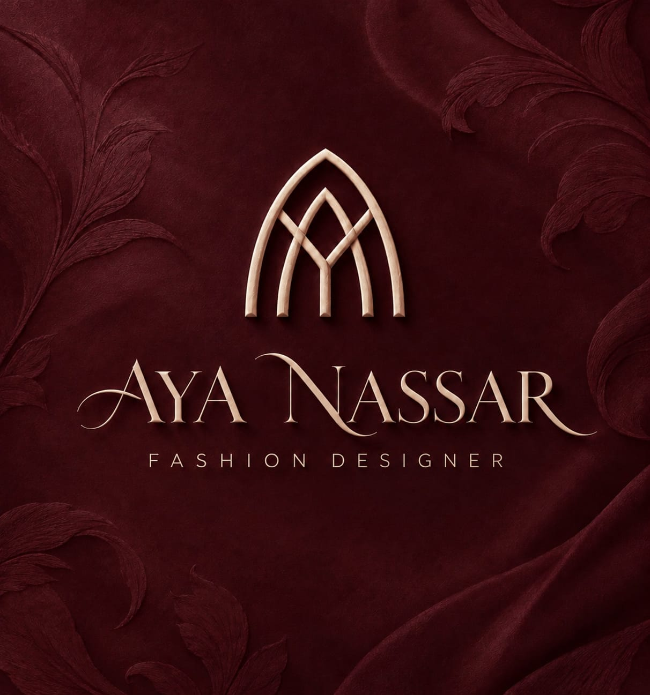

AYA NASSAR
FASHION DESIGNER
أناقة صُممت لتشبهك
تصاميم مفصّلة حسب الذوق والمناسبة، تُصنع بفنٍّ وعناية بالتفاصيل.
اكتشفي التصاميم


عن آية
آية نصار، مصممة أزياء
آية نصار مصممة أزياء ترى أن القطعة الجميلة تُفصَّل على صاحبتها، فتنطلق كل فكرة من ذوقها وشخصيتها لا من قالب جاهز.
يميل أسلوبها إلى الأقمشة الناعمة والدانتيل والتطريز الدقيق، بألوان هادئة وتفاصيل محسوبة تمنح كل تصميم طابعاً أنثوياً فنياً.
- الإبداع
- الثقة
- الاهتمام بالتفاصيل
- التخصيص
- الاحترافية
- التفرّد
التصاميم
من أعمال AYA
ومزيد من الأعمال ستُضاف قريبًا...

تجربة التصميم الخاص
ليست قطعةً جاهزة، بل حكايتكِ
- التفرّد
- كل تصميم فريد، لا يتكرر.
- الإبداع
- فكرة فنية تتشكل من ذوقكِ ومناسبتكِ.
- التخصيص
- تُختار الأقمشة والتفاصيل معكِ خطوةً بخطوة.
- العناية بالتفاصيل
- من القياس إلى آخر غرزة.
آلية العمل
رحلتكِ مع AYA في خمس مراحل
- ١
التواصل والاستشارة الأولية
تبدأ الرحلة بالتواصل لفهم فكرة العميلة واحتياجاتها وتحديد موعد اللقاء.
- ٢
اللقاء الأول والاتفاق
مناقشة التصميم والموديل والتفاصيل والاتفاق على السعر.
- ٣
اختيار الأقمشة والتفاصيل
اختيار الأقمشة والخامات المناسبة بالتعاون مع العميلة.
- ٤
التصميم والتنفيذ
إعداد التصميم وأخذ القياسات والتفصيل والخياطة مع المتابعة خلال مراحل العمل.
- ٥
التجربة والتسليم
التجربة النهائية وإجراء التعديلات الضرورية ثم تسليم القطعة.
